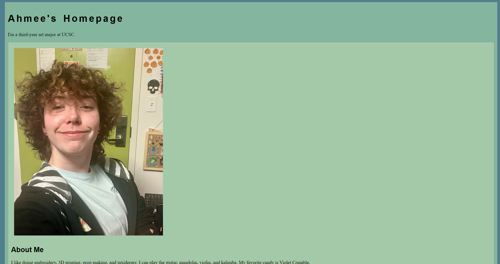

Lab 3 - File Structure and File Transfer
Challenge
This lab challenges us to organize our files inside of our repository and link files to each other using HTML.
Problems
The only problems we ran into was finding the css files for our homepage and figuring out what screenshots should be submitted to the assignment pdf.
Reflection
I put a moderate amount of energy into this assignment. It was a little more work than I was expecting but I still thought it was fairly simple due to most of our files already being set up via copying the repository from Installfest.
Results
This screenshot is the results of our file organization:
This is my HTML code for my homepage.
This is my homepage
This is my HTML code for Lab 3.
This is the screenshot for Lab 3.